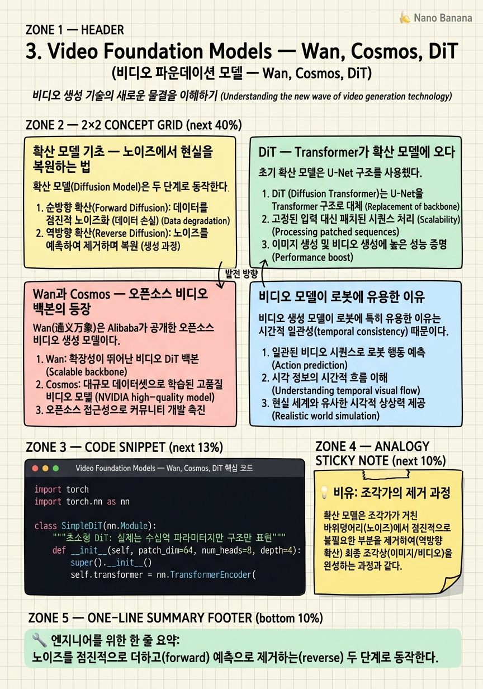

Video Foundation Models — Wan, Cosmos, DiT

🎯 학습 목표
- 확산 모델(Diffusion Model)의 핵심 원리를 설명할 수 있다
- DiT가 U-Net 기반 확산 모델보다 나은 이유를 이해한다
- Wan과 Cosmos의 주요 특징을 비교할 수 있다
- 비디오 모델의 시간적 일관성이 로봇에 왜 중요한지 설명한다
- 오픈소스 비디오 백본이 WAM 연구를 어떻게 가속했는지 이해한다
WAM이 가능해진 가장 결정적인 이유는 강력한 오픈소스 비디오 생성 모델의 등장이다. 2024~2025년, DiT(Diffusion Transformer) 기반의 Wan, Cosmos 같은 모델들이 공개되면서 연구자들은 수백 ZFLOPs를 들여 비디오 모델을 처음부터 학습할 필요 없이, 이미 물리 세계의 역학을 이해한 백본 위에서 로봇 데이터만으로 파인튜닝할 수 있게 됐다.
이 챕터에서는 비디오 생성 모델의 핵심 기술인 확산 모델과 DiT(Diffusion Transformer)를 기초부터 설명하고, Wan과 Cosmos의 특징을 비교한다. 비디오 모델이 단순히 "멋진 영상을 만드는 것"을 넘어 어떻게 시간적·물리적 인과 관계를 인코딩하는지에 집중한다.
핵심 내용
확산 모델 기초 — 노이즈에서 현실을 복원하는 법
확산 모델(Diffusion Model)은 두 단계로 동작한다.
전진 과정(Forward Process): 실제 이미지/비디오에 가우시안 노이즈를 조금씩 더해 \(T\) 스텝 후 완전한 노이즈로 만든다:
\[q(x_t | x_{t-1}) = \mathcal{N}(x_t;\ \sqrt{1-\beta_t}\,x_{t-1},\ \beta_t I)\]
역방향 과정(Reverse Process): 신경망 \(\epsilon_\theta\)가 노이즈에서 점진적으로 원본 데이터를 복원한다. 학습 목표:
\[\mathcal{L} = \mathbb{E}_{t,x_0,\epsilon}\left[\|\epsilon - \epsilon_\theta(x_t, t)\|^2\right]\]
비디오 생성에서는 모든 프레임에 동일하게 노이즈를 더하고, 역방향 과정에서 시공간적으로 일관된 영상을 복원한다. 핵심 직관: 모델은 "원본이 얼마나 노이즈를 먹었는가"를 예측하는 작업을 통해 데이터 분포를 학습한다.
DiT — Transformer가 확산 모델에 오다
초기 확산 모델은 U-Net 구조를 사용했다. CNN 기반 인코더-디코더로, 지역적 패턴을 잘 잡지만 장거리 의존성에 약했다.
DiT(Diffusion Transformer)는 U-Net을 Transformer로 대체한 것이다(Peebles & Xie, 2023). 이미지를 패치로 분할하고 Self-Attention으로 전역적 관계를 모델링한다.
비디오 DiT에서는 시간 축이 추가된다: - 공간 어텐션(Spatial Attention): 각 프레임 내 패치 간 관계 - 시간 어텐션(Temporal Attention): 동일 위치의 시간적 변화 - 3D 풀 어텐션: Wan 등에서 사용, 공간+시간을 함께 처리
| 기준 | U-Net 기반 | DiT 기반 |
|---|---|---|
| 장거리 의존성 | 약함 | 강함 (어텐션) |
| 스케일링 법칙 | 불명확 | LLM처럼 명확 |
| 비디오 확장 | 복잡 | 시간 토큰 추가로 자연스러움 |
스케일링 법칙이 LLM과 유사하다는 점이 핵심이다 — 더 큰 모델, 더 많은 데이터일수록 예측 가능하게 성능이 향상된다.
Wan과 Cosmos — 오픈소스 비디오 백본의 등장
Wan(通义万象)은 Alibaba가 공개한 오픈소스 비디오 생성 모델이다. 14B 파라미터 버전이 DreamZero의 WAM 백본으로 사용된다. 3D Full Attention 구조로 시공간 일관성이 높고, 물체 물리 특성(탄성, 마찰 등)을 암묵적으로 인코딩한다는 보고가 있다. Wan 2.2-5B 버전은 LingBot-VA에서 16k 시간의 크로스-에뮬레이션 사전학습에 사용됐다.
Cosmos는 NVIDIA가 공개한 비디오 파운데이션 모델로 로봇·자율주행 응용에 특화됐다. Cosmos Policy는 행동을 합성 잠재 프레임(synthetic latent frame)으로 인코딩하는 독특한 방식을 쓴다.
두 모델의 공통점: - DiT 기반 3D 확산 모델 - 오픈 가중치 (fine-tuning 가능) - 수십~수백 PB의 비디오 데이터로 사전학습 - 텍스트 조건부 생성 지원
이 모델들이 공개되기 전, WAM 연구는 비디오 사전학습 비용 때문에 소수 기관만 할 수 있었다.
비디오 모델이 로봇에 유용한 이유
비디오 생성 모델이 로봇에 특히 유용한 이유는 시간적 일관성(temporal consistency) 때문이다. 좋은 비디오 모델은 프레임 간에 물체의 위치·모양·상태가 물리 법칙에 맞게 변해야 한다. 이 제약을 학습하면서 모델은 자연스럽게 접촉 역학, 중력, 관성 같은 물리 규칙을 인코딩하게 된다.
또한 인터넷 비디오에는 의도적 인간 행동이 풍부하게 담겨 있다. 요리·조립·수리 영상에서 손이 움직이는 방식은 목표 지향적이다.
Veo 3.1 제로샷 실험이 이를 잘 보여준다. NVIDIA 아티클에서 언급된 이 실험에서, 로보틱스 파인튜닝 없이 순수 비디오 모델을 실제 DROID 작업에 적용했을 때 그럴듯한 로봇 동작과 작업 시퀀스를 생성했다. 그리퍼가 다른 손으로 변하는 아티팩트가 있었지만, 비디오 사전학습이 이미 상당한 물리 지식을 담고 있음을 시사한다.
💡 비유로 이해하기
확산 모델의 역방향 과정은 조각가가 대리석을 깎는 것과 비슷하다. 미켈란젤로는 "천사는 원래 돌 안에 있었다. 나는 불필요한 부분만 제거했다"고 말했다. 확산 모델도 마찬가지다 — 순수한 노이즈(아무 형태도 없는 대리석 덩어리) 안에서 조금씩 불필요한 노이즈를 제거해 최종 이미지/비디오를 드러낸다.
DiT의 역할은 "어디를 깎아야 하는지를 아는 마스터 조각가"다. U-Net 기반 이전 방식이 망치와 정으로 국소적으로 작업했다면, DiT는 전체 조각을 한 번에 보면서(Self-Attention) 균형 잡힌 결정을 내린다.
비디오 생성에서는 이 과정이 공간(2D)뿐만 아니라 시간(1D)에도 동시에 적용된다. 각 프레임이 물리적으로 일관된 시퀀스를 이루도록 3D 전체를 동시에 "조각"하는 것이다.
💻 코드 예시
확산 모델의 역방향 샘플링 과정을 단순화해 구현해보자. 노이즈에서 시작해 점진적으로 정제하는 핵심 루프를 보여준다.
import torch
import torch.nn as nn
class SimpleDiT(nn.Module):
"""초소형 DiT: 실제는 수십억 파라미터지만 구조만 표현"""
def __init__(self, patch_dim=64, num_heads=8, depth=4):
super().__init__()
self.transformer = nn.TransformerEncoder(
nn.TransformerEncoderLayer(
d_model=patch_dim, nhead=num_heads,
dim_feedforward=patch_dim*4, batch_first=True
),
num_layers=depth
)
# 타임스텝 임베딩: 확산 스텝 t를 조건으로 주입
self.time_embed = nn.Sequential(
nn.Linear(1, patch_dim), nn.SiLU(), nn.Linear(patch_dim, patch_dim)
)
self.out = nn.Linear(patch_dim, patch_dim)
def forward(self, x_noisy, t):
"""
x_noisy: (B, T*H*W, patch_dim) 시공간 패치 시퀀스
t: (B, 1) 정규화된 타임스텝 (0~1)
"""
t_emb = self.time_embed(t).unsqueeze(1) # (B, 1, D)
x = x_noisy + t_emb # 타임스텝 조건 주입
x = self.transformer(x)
return self.out(x) # 예측 노이즈
def ddim_sample(model, shape, num_steps=20, device='cpu'):
"""DDIM 샘플링: 적은 스텝으로 고품질 생성"""
x = torch.randn(*shape, device=device) # 순수 노이즈에서 시작
timesteps = torch.linspace(1.0, 0.0, num_steps + 1)[:-1]
for t in timesteps:
t_batch = torch.full((shape[0], 1), t.item(), device=device)
with torch.no_grad():
eps = model(x, t_batch) # 예측 노이즈
alpha = 1 - t.item()
x = (x - (1 - alpha)**0.5 * eps) / max(alpha**0.5, 1e-6)
return x # 최종 생성된 잠재 표현
model = SimpleDiT()
latent = ddim_sample(model, shape=(1, 64, 64)) # 16프레임×4패치, dim=64
print(f'생성된 잠재 shape: {latent.shape}')SimpleDiT는 시공간 패치를 Transformer로 처리한다. 실제 Wan/Cosmos에서는 이 패치가 비디오의 3D VAE 압축 결과다. ddim_sample()은 \(t=1\)(순수 노이즈)에서 \(t=0\)(깨끗한 샘플)까지 점진적으로 노이즈를 제거한다. WAM 파인튜닝에서는 이 생성 과정을 "로봇 팔이 움직이는 비디오"에 조건화한다.
🏭 현업에서의 평가
✅ 시니어가 보는 것
- DiT vs U-Net의 실질적 차이(스케일링, 전역 어텐션)를 설명할 수 있는가
- 확산 모델의 샘플링 속도 문제와 개선 방법(DDIM, consistency model)을 아는가
- Wan과 Cosmos를 직접 써보거나 파인튜닝해본 경험이 있는가
⚠️ 레드 플래그
- 확산 모델을 GAN과 혼동하는 것
- DiT가 단순히 '더 좋은 U-Net'이라고만 설명하고 스케일링 법칙 관점을 언급하지 않는 것
- 비디오 모델의 추론 비용(수십 초~수 분)을 모르는 것
🎤 예상 인터뷰 질문
- 확산 모델에서 DDIM 샘플링이 DDPM보다 빠른 이유는 무엇인가요?
- 비디오 DiT에서 시간 어텐션과 공간 어텐션을 분리하는 것과 3D 풀 어텐션의 트레이드오프는 무엇인가요?
- Wan 모델을 로봇 제어용으로 파인튜닝할 때 어떤 데이터 형식이 필요한가요?
✨ 핵심 요약
확산 = 노이즈 제거
노이즈를 점진적으로 더하고(forward) 예측으로 제거하는(reverse) 두 단계로 동작한다.
DiT의 핵심 장점
Transformer의 전역 어텐션 + LLM과 유사한 스케일링 법칙.
Wan = 오픈소스 WAM 백본
Alibaba의 14B 비디오 모델, DreamZero·LingBot-VA의 핵심 컴포넌트.
Cosmos = 물리 특화
NVIDIA가 로봇·자율주행용으로 설계, Cosmos Policy의 기반.
시간적 일관성이 핵심
비디오 모델의 시공간 일관성 학습이 물리 역학 인코딩의 근거.
오픈소스가 판을 바꿨다
파인튜닝만으로 WAM 구축이 가능해져 소규모 연구팀도 참여 가능해졌다.